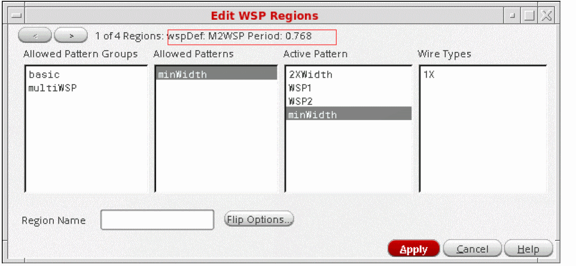
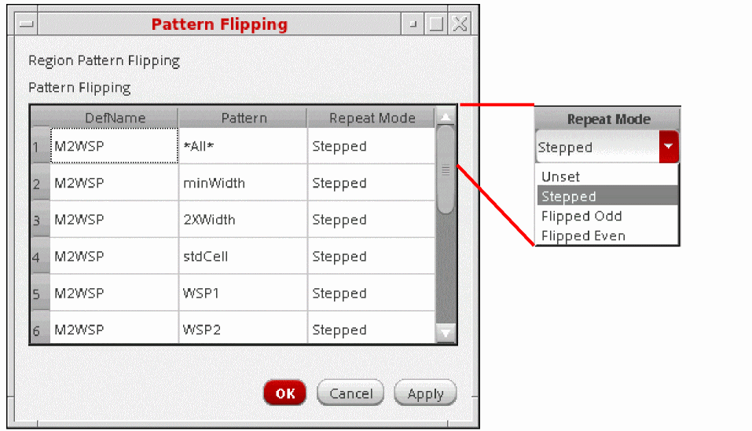

Editing Width Spacing Pattern Regions
You can change the attributes associated with WSP regions such as the region name, allowed patterns and pattern groups, the active pattern, wire types, and repeat mode.
- Select one or more regions in the canvas.
-
Click the Edit Region icon on the toolbar in the Track Pattern assistant.
The Edit WSP Regions form appears.
The current region index and number of regions are shown at the top of the form with the WSSPDef and period for the current region. Each region group will be represented by a region for each of its layers. For example, a region group comprising three layers will be represented by three regions, one for each of the three layers. - Use the left and right arrows at the upper-left corner of the form to scroll between the regions.
- Choose the Allowed Pattern Groups, Allowed Patterns, the Active Pattern, and Wire Types in the respective lists for the region.
-
Click Flip Options to view or change the repeat mode for a pattern in the region.
The Pattern Flipping form appears.
The default repeat mode for a WSSPDef in the region is the first table entry for the WSSPDef with Pattern *All*. All patterns in the WSSPDef will have the same repeat mode unless you change individual settings in the Repeat Mode column.
Choose the default repeat mode or individual pattern repeat modes for the region as one of the following: Stepped, Flipped Odd, or Flipped Even from the respective row in the Repeat Mode column. Unset restores the value to the global grid repeat mode for a WSSPDef, or to the default for the WSSPDef if you are unsetting an individual pattern. - Click OK or Apply to set the changes.
Related Topics
Launching the Track Pattern Assistant
Track Pattern Assistant Toolbar
Return to top